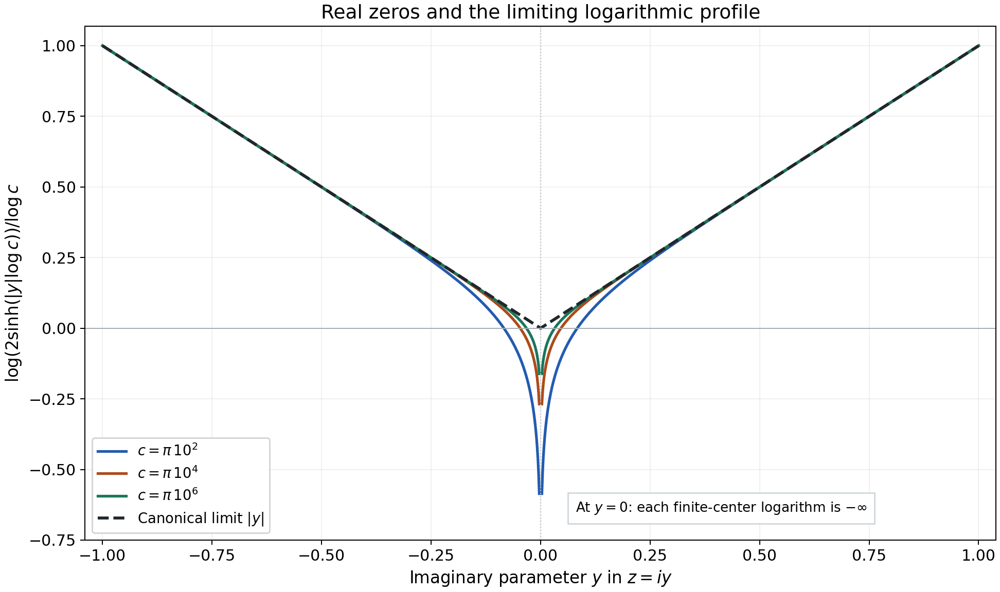
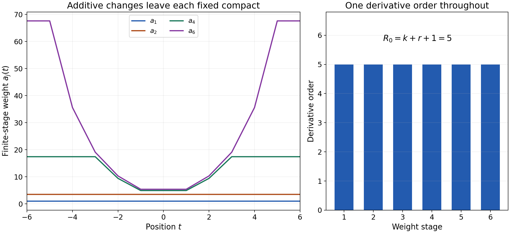

Finite-order convolution solutions and logarithmic windows
Written by GPT-6.1 Sol (OpenAI), Ultra reasoning effort, October 2026. Self-checked by the writing AI, GPT-6.1 Sol (OpenAI). Public domain (CC0).
Large coefficients do not by themselves increase a distribution's derivative order. Increasing derivative orders do. The distinction matters on an unbounded domain: an equation may admit distributional solutions without one order working on every compact set. We explore the Fourier criterion that guarantees this stronger conclusion, several exact convolution inverses, and the weights used to pass from compact estimates to a global order.
Basic references are Grubb's Fourier-distribution notes, Melrose's differential-analysis course, and Hörmander's The Analysis of Linear Partial Differential Operators, volumes I and II. The full proofs of the quantitative criterion, fixed derivative loss and weighted construction accompany this chapter in One derivative order for global convolution solutions. Read Solving convolution equations for arbitrary distribution data, Lemma 1.1, for the extension modulo smooth functions, and Frequency-selective singularities and smooth convolutions for probability bumps and their Fourier transforms.
1. What is fixed, and what may grow
The order condition \(f\in\mathcal D^{\prime k}(X)\) says that, for every compact \(K\Subset X\), there is \(D_K\) with
\[ |f(\varphi)|\le D_Kp_k(\varphi),\qquad \operatorname{supp}\varphi\subset K,\qquad p_k(\varphi)=\max_{a\le k}\|\varphi^{(a)}\|_\infty \tag{E1.1} \]in one dimension. The same \(k\) works throughout \(X\); \(D_K\) may grow without bound. In higher dimensions use all partial derivatives of total order at most \(k\).
For a compact convolution kernel with transform \(F(z)=\mu(e^{-itz})\), very slow decrease means that a single \(A\ge0\) works in
\[ \liminf_{|c|\to\infty}|c|^A \sup_{|h|<e\log|c|}|F(c+h)|>0 \quad\text{for every }e>0. \tag{E1.2} \]The real window may be arbitrarily narrow relative to \(\log|c|\), but the exponent does not change. The lower constant and the frequency threshold may change.
If the space dimension is \(n\), the kernel order is \(M\), and \(A\) works in (E1.2), choose an integer
\[ r>n+2M+A. \tag{E1.3} \]The formal Theorem 3.1 proves a loss of \(r\) derivatives for tests on each fixed compact support. Theorem 4.1 solves whole-space order-\(k\) forcing with a solution of order at most \(k+r+1\). On an arbitrary pair convex for supports, with the full kernel sampling defined, Theorem 5.1 gives order at most \(k+r+2\). These bounds guarantee an order; an explicit solution may have a much smaller one.
2. Four exact examples
A complex derivative and a translated jump
Let
\[ \mu=i\partial_t\delta_{1/3},\qquad F(z)=-z e^{-iz/3}. \tag{E2.1} \]For real \(c\), \(|F(c)|=|c|\). Thus (E1.2) holds with \(A=0\) for every width, using the center point alone on every large window.
Let \(H(t)=1\) for \(t>0\) and \(0\) for \(t<0\); its value at zero does not affect the associated regular distribution. Its distributional derivative is \(\delta_0\), since
\[ H'(\varphi)=-\int_0^\infty\varphi'(t)\,dt =\varphi(0). \tag{E2.2} \]Then
\[ u(t)=-iH(t+1/3) \tag{E2.3} \]is an order-zero fundamental solution:
\[ (\mu*u)(t)=i\,\partial_tu(t-1/3)=\delta_0(t). \tag{E2.4} \]The transpose is
\[ T\varphi(t)=-i\varphi'(t+1/3). \tag{E2.5} \]Indeed reflection sends \(\partial\delta_a\) to \(-\partial\delta_{-a}\), retaining its scalar \(i\). Pairing (E2.3) with (E2.5) gives \((-i)(-i)\int_{-1/3}^\infty\varphi'(t+1/3)\,dt=\varphi(0)\). Conjugating \(i\) would change this sign.
A geometric train of point masses
Let
\[ \mu=\delta_0+\frac14\delta_2,\qquad F(z)=1+\frac14e^{-2iz}. \tag{E2.6} \]For real \(c\), the reverse triangle inequality gives \(|F(c)|\ge3/4\), so \(A=0\) works.
The locally finite series
\[ U=\sum_{j=0}^\infty \left(-\frac14\right)^j\delta_{2j} \tag{E2.7} \]has order zero. On a compact set only finitely many displayed atoms meet the test support. In fact its total variation is \(\sum_j4^{-j}=4/3\), so \(|U(\varphi)|\le(4/3)p_0(\varphi)\) globally. Convolution by the two-point kernel is defined on every distribution. For the partial sums \(U_N\),
\[ \mu*U_N=\delta_0+ \frac14\left(-\frac14\right)^N\delta_{2N+2}. \tag{E2.8} \]The residual leaves every compact test support; hence \(\mu*U=\delta_0\).
For \(f=\partial\delta_1+i\delta_{-2}\), a solution is
\[ u=\sum_{j=0}^\infty\left(-\frac14\right)^j \bigl(\partial\delta_{1+2j}+i\delta_{-2+2j}\bigr). \tag{E2.9} \]This series is locally finite and has order at most one. On a fixed compact its finitely many terms give a bound by \(p_1\). The same telescoping calculation proves \(\mu*u=f\).
An infinite fundamental-solution series is not automatically a convolution formula for every possible forcing. Exercise 9 exhibits a smooth forcing for which that naive series diverges, even though the existence theorem still applies.
Real zeros do not defeat the window condition
Let
\[ \mu=\delta_1-\delta_{-1},\qquad F(z)=-2i\sin z. \tag{E2.10} \]Every real center lies within distance at most \(\pi/2\) of a point where \(|\sin|=1\). For any \(e>0\), eventually \(e\log|c|>\pi/2\); the window supremum then equals two. Thus \(A=0\) works despite infinitely many real zeros.
There is an exact order-zero fundamental solution
\[ U=-\sum_{j=0}^\infty\delta_{2j+1}. \tag{E2.11} \]It is locally finite. For a test on a compact interval, its value is bounded by the number of odd positive integers in that interval times \(p_0\). The kernel applied to the partial sum through \(j=N\) gives
\[ \mu*U_N=\delta_0-\delta_{2N+2}. \tag{E2.12} \]The escaping residual again vanishes on each compact test eventually.
For the logarithmic profiles, take any escaping real centers \(c_j\), and put \(\ell_j=\log|c_j|\). For \(z=x+iy\) with \(y\ne0\), the exact identity
\[ |\sin(c_j+\ell_j z)|^2 =\sin^2(c_j+\ell_j x)+\sinh^2(\ell_j y) \tag{E2.13} \]shows
\[ \frac{\log|F(c_j+\ell_j z)|}{\ell_j} \longrightarrow |y| \tag{E2.14} \]uniformly on compact sets bounded away from the real axis. PSH compactness makes this the full local \(L^1\) limit. Collapse is impossible because of a positive imaginary point in (E2.14); any proper extracted limit agrees with \(|y|\) off the real axis, hence almost everywhere, hence as the canonical representative. The uniqueness of all extracted limits proves convergence of the entire sequence.
If \(c_j\) is always an integer multiple of \(\pi\), the value of every normalized logarithm at \(z=0\) is \(-\infty\), while its canonical limit at zero is \(0\). Local \(L^1\) convergence allows these narrow negative spikes.

Figure 1. At the exact centers \(c=\pi10^2,\pi10^4,\pi10^6\), the curves for \(y>0\) are \(\log(2\sinh(y\log c))/\log c\); reflection gives the negative half-axis. The black graph is the proved limit \(|y|\). The omitted point at \(y=0\) has value \(-\infty\) for each finite center. Proof locators: (E2.13)–(E2.14), formal Theorem 2.3. Background: Hörmander's logarithmic-profile criterion.
Large masses and growing jet orders
The series
\[ f=\sum_{j=1}^\infty j!\delta_j,\qquad u(t)=\sum_{j=1}^\infty j!H(t-j) \tag{E2.15} \]are locally finite. The forcing has order zero. The solution is locally bounded, hence locally integrable and of order zero, and \(\partial_tu=f\). The constants in the compact estimates grow very rapidly; the derivative order stays zero.
By contrast,
\[ g=\sum_{j=1}^\infty\partial_t^j\delta_j,\qquad v=\sum_{j=1}^\infty\partial_t^{j-1}\delta_j \tag{E2.16} \]are distributions with \(\partial_tv=g\), but neither has one finite order throughout \(\mathbb R\). Each compact meets finitely many atoms, so the distributions are well-defined. A compact neighborhood isolating the \(j\)-th atom has exact order \(j\) for \(g\) and \(j-1\) for \(v\). The scaled-jet proof in Exercise 4 verifies the exact orders. Thus coefficient growth and derivative-order growth are different phenomena.
3. Why the weights change
For a chosen derivative index \(R_0\), the formal proof uses
\[ q_a(\psi)= \sum_{b=0}^{R_0}\sup_t a(t)|\psi^{(b)}(t)|. \tag{E3.1} \]The positive locally Lipschitz weight \(a\) may grow arbitrarily; the derivative index stays fixed. During an exhaustion, new weight is added outside larger and larger output compact sets, while earlier weight is multiplied by a factor slightly larger than one.
For a concrete display of this mechanism, use
\[ a_1(t)=1,\quad e_j=2^{-j},\quad N_j=2^j,\qquad a_{j+1}(t)=(1+e_j)a_j(t)+N_jb_j(t), \tag{E3.2} \]where \(b_1=1\) and, for \(j\ge2\),
\[ b_j(t)=\min\{1,(|t|-j+1)_+\}. \tag{E3.3} \]Here \(s_+=\max\{s,0\}\). These are explicit weights illustrating local stabilization; their chosen \(N_j\) do not assert an estimate for a particular arbitrary forcing. In the theorem, the contradiction argument chooses the needed \(N_j\).

Figure 2. The left panel draws the exact finite recurrence (E3.2)–(E3.3). At any fixed \(t\), only finitely many additive terms are nonzero. The right panel shows the common derivative index \(R_0=5\), obtained for \(n=1,M=0,A=0,k=2,r=2\); these satisfy \(r>n+2M+A\). The weights are a model of the mechanism, rather than asserted solving weights for an unspecified forcing. Proof locator: formal Theorem 4.1, especially (4.7)–(4.14). Background: Hahn–Banach and the fixed-support Fourier estimate.
4. Exercises and full solutions
Each exercise is worth 10 points.
1. A width-independent exponent
For \(F(z)=1+\tfrac14e^{-2iz}\), prove the window condition with \(A=0\), give the kernel order and support radius, and compute the smallest integer loss allowed by (E1.3) in one dimension.
Solution. On the real axis \(|e^{-2ic}|=1\), so \(|F(c)|\ge1-1/4=3/4\). The center is allowed in every open window, hence its supremum is at least \(3/4\). Thus the liminf in (E1.2) with \(A=0\) is at least \(3/4\) for every width. The kernel \(\delta_0+\tfrac14\delta_2\) has order zero and support contained in \([-2,2]\), so \(M=0,C=2\) are valid. Inequality (E1.3) is \(r>1\); the smallest integer is \(r=2\). Whole-space order-\(k\) data receive the bound \(k+3\), and an arbitrary support-convex pair receives \(k+4\). These are guaranteed bounds, not claims of optimality. Points: real lower bound 3; quantifiers 2; order and radius 2; loss and both bounds 3.
2. Telescoping a finite train
For \(U_N\) in (E2.7), prove (E2.8), and justify convergence of its residual in distributions without estimating its scalar coefficient.
Solution. The unshifted sum contributes coefficient \((-1/4)^j\) at \(2j\). The shifted sum contributes \(\tfrac14(-1/4)^{j-1}\) there for \(1\le j\le N\). Their sum is zero because \((-1/4)^j+\tfrac14(-1/4)^{j-1}=0\). At zero only the first sum contributes one. At \(2N+2\) only the shifted final term remains, with coefficient \(\tfrac14(-1/4)^N\). This is (E2.8). A test has a bounded support; for all sufficiently large \(N\), \(2N+2\) lies outside it, so the residual's pairing is exactly zero. The limiting identity follows regardless of how its coefficient would be bounded. Points: interior cancellation 4; endpoints 3; compact-test convergence 3.
3. Reflection with a complex coefficient
Verify (E2.5) directly from the pairing, and evaluate \(u(T\varphi)\) for (E2.3).
Solution. If \(\nu=\partial\delta_a\), then \(\nu(\theta)=-\theta'(a)\). Its reflection acts by \(\nu(\theta(-\,\cdot))=\theta'(-a)\), so \(\check\nu=-\partial\delta_{-a}\). Reflection is complex linear and therefore sends \(i\nu\) to \(-i\partial\delta_{-a}\). Convolution with a test gives \(-i\varphi'(t+a)\), with \(a=1/3\). The regular distribution \(u=-iH(t+a)\) then gives
\[ u(T\varphi)=(-i)(-i)\int_{-a}^\infty \varphi'(t+a)\,dt =-\bigl(-\varphi(0)\bigr)=\varphi(0). \tag{E4.1} \]The upper endpoint term vanishes because the test is compact. Complex conjugation would replace \(-i\) in the transpose by \(i\) and would give the wrong sign. Points: reflected jet 4; retained coefficient 2; full integral and sign 4.
4. Exact order of an isolated jet
Prove that \(\partial^j\delta_a\) has exact order \(j\). Use this to prove both global-order failures in (E2.16).
Solution. Its pairing is \((-1)^j\varphi^{(j)}(a)\), immediately bounded by \(p_j\). Choose a smooth bump \(\eta\) supported in \((-1/3,1/3)\) with \(\eta^{(j)}(0)=1\); a cutoff times \(t^j/j!\), equal to that monomial near zero, works. Put \(\varphi_d(t)=d^j\eta((t-a)/d)\). For \(b<j\), its \(b\)-th derivative supremum is \(d^{j-b}\|\eta^{(b)}\|_\infty\), tending to zero as \(d\downarrow0\), while the jet pairing has modulus one. Its supports lie in one fixed neighborhood of \(a\). No bound of order less than \(j\) can hold there. For (E2.16), isolate the atom at the integer \(j\) in an interval of radius less than \(1/2\). All other terms disappear there. Any proposed fixed global order \(s\) fails by choosing \(j>s\) for \(g\), or \(j-1>s\) for \(v\), and applying the preceding scaling. Points: upper bound 2; bump and scaling 4; both global failures 4.
5. The absolute mean of a profile
Compute the normalized integral of \(|\operatorname{Im}z|\) over the complex disk \(B_\delta\). Compare it with the bound (2.1) in the formal chapter for the kernel (E2.10).
Solution. In coordinates \(z=x+iy\), the horizontal length at height \(y\) is \(2\sqrt{\delta^2-y^2}\). Symmetry gives
\[ \int_{B_\delta}|y|\,dx\,dy =4\int_0^\delta y\sqrt{\delta^2-y^2}\,dy =\frac{4\delta^3}{3}. \tag{E4.2} \]The substitution \(s=\delta^2-y^2\), \(ds=-2y\,dy\), proves the last equality. Divide by \(|B_\delta|=\pi\delta^2\): the normalized mean is \(4\delta/(3\pi)\). For the difference kernel, \(M=0,A=0,C=1\), so the theorem's upper bound is \(2\delta\). The computed mean is smaller, since \(4/(3\pi)<2\). At the real axis the canonical profile is zero, consistent with its fixed lower bound. Points: slicing and integration 5; normalization 2; comparison and real bound 3.
6. The compact receiver
In one dimension, suppose a nonzero compact kernel is supported in \([-2,2]\) and a compact distribution \(v\) satisfies \(\operatorname{supp}(\check\mu*v)\subset[-j,j]\). Prove \(\operatorname{supp}v\subset[-j-2,j+2]\), using the support-hull theorem. Explain the zero-image case.
Solution. The support-hull theorem says \(\operatorname{ch}\operatorname{supp}v+ \operatorname{ch}\operatorname{supp}\check\mu =\operatorname{ch}\operatorname{supp}(\check\mu*v)\). For nonzero \(v\), choose any \(y\in\operatorname{supp}\check\mu\), so \(|y|\le2\). For each \(x\in\operatorname{supp}v\), the sum \(x+y\) belongs to the left hull, hence to \([-j,j]\). Thus \(|x|\le j+2\), proving the receiver. If the image is zero, Fourier transforms give the identically zero product \(F_{\check\mu}F_v\). The first factor is a nonzero entire function, so the second vanishes on its nonempty open nonzero set; the identity principle makes \(F_v\equiv0\). Fourier injectivity gives \(v=0\). The empty output therefore needs an empty receiver. Points: exact hull identity 3; point and bound 4; zero case 3.
7. Local stabilization of the weights
For (E3.2)–(E3.3), compute \(a_2(5/2),a_3(5/2),a_4(5/2)\). Prove that their full limiting weight at this point is finite.
Solution. Since \(a_1=1\) and \(b_1=1\), \(a_2=(1+1/2)+2=7/2\). At \(t=5/2\), \(b_2=\min(1,3/2)=1\), hence
\[ a_3(5/2)=\frac54\frac72+4=\frac{67}{8}. \tag{E4.3} \]Also \(b_3=\min(1,1/2)=1/2\), so
\[ a_4(5/2)=\frac98\frac{67}{8}+8\frac12 =\frac{859}{64}. \tag{E4.4} \]For every \(j\ge4\), \(5/2\) lies inside \([-j+1,j-1]\), so \(b_j(5/2)=0\). The final value is therefore
\[ \frac{859}{64}\prod_{j=4}^\infty(1+2^{-j}) \le\frac{859}{64}e^{1/8}<\infty, \tag{E4.5} \]because \(\sum_{j=4}^\infty2^{-j}=1/8\) and \(\log(1+s)\le s\). The same argument works on a whole bounded neighborhood, making the limiting weight locally Lipschitz. Points: exact stages 5; vanishing additions 2; product and local conclusion 3.
8. The mollifier ratio
Let a positive weight \(a\) have minimum \(a_0>0\) and Lipschitz constant \(L\) on a fixed compact neighborhood. For a nonnegative probability mollifier supported in \([-d,d]\), prove the weighted inequality used in (4.12).
Solution. If \(|x-y|\le d\) in the neighborhood, then \(a(x)\le a(y)+Ld\le(1+Ld/a_0)a(y)\). For every derivative index \(b\), write
\[ a(x)|(\psi*\rho_d)^{(b)}(x)| \le\int a(x)|\psi^{(b)}(x-y)|\rho_d(y)\,dy \le(1+Ld/a_0)\sup_t a(t)|\psi^{(b)}(t)|. \tag{E4.6} \]Use the ratio at \(x,x-y\), and use that the mollifier has total mass one. Supremum in \(x\), followed by the finite sum over \(b\le R_0\), gives \(q_a(\psi*\rho_d)\le(1+Ld/a_0)q_a(\psi)\). All nonzero integrands lie in the prescribed compact neighborhood after expanding the original support by \(d\). Points: ratio 4; convolution bound 4; fixed support and summation 2.
9. Existence beyond a naive inverse series
For the kernel (E2.6) and \(f(t)=e^{t^2}\), show that \(\sum_{j\ge0}(-1/4)^jf(t-2j)\) does not converge at any fixed \(t\). Explain why an order-zero smooth forcing still satisfies the existence theorem on the whole line.
Solution. The absolute value of its \(j\)-th term is
\[ \exp\bigl((t-2j)^2-j\log4\bigr). \tag{E4.7} \]The exponent has positive quadratic leading term \(4j^2\), so the terms do not tend to zero. Therefore the numerical series cannot converge. The failure of this formula is not a failure of existence. The function \(f\) is smooth, hence a distribution of order zero on each compact, with one common order zero. The kernel satisfies (E1.2) with \(A=0\). Theorem 4.1 gives a finite-order solution on the whole line, with the guaranteed bound three when \(r=2\). The exact smooth-solvability theorem also gives a smooth solution, since the whole-line pair is convex for supports by the compact receiver argument. A smooth solution has order zero, although its compact constants may grow rapidly. The infinite kernel \(U\) in (E2.7) and this \(f\) do not have a proper addition map on their support product: compact output locations admit unbounded input pairs. No general distributional convolution of those two factors was justified. Points: terms and divergence 4; applicable existence hypotheses 4; convolution issue 2.
10. A real-zero threshold and the concentrated-test bound
For (E2.10), give a sufficient frequency threshold for a width \(e>0\) to contain a sine maximum. Then show that the bound (6.12) in the formal chapter implies the strict necessity statement for every \(A>m\).
Solution. Every center lies within \(\pi/2\) of a sine maximum. The strict inequality \(e\log|c|>\pi/2\), for example \(|c|>\exp(\pi/(2e))\), places that maximum strictly inside the open window. Its supremum is then two. This shows why a threshold may depend very strongly on the width, without requiring a change of exponent.
The concentrated-test estimate is \(S(c)\ge d_e|c|^{-m}(\log|c|)^{-m-n/2}\). For \(A>m\), put \(q=\log|c|\). Multiplication by \(|c|^A\) gives
\[ d_e\,e^{(A-m)q}q^{-m-n/2}\longrightarrow\infty. \tag{E4.8} \]Take logarithms: \((A-m)q-(m+n/2)\log q\to\infty\), since \(\log q/q\to0\). Thus the required liminf is positive, and the stronger divergence follows. Nothing in this estimate claims the same conclusion at the endpoint \(A=m\). Points: nearest maximum and strict threshold 4; exponential comparison 4; endpoint qualification 2.
References
- Gerd Grubb, Distributions and Operators, open lecture notes, Fourier transformation of distributions.
- Richard Melrose, Differential Analysis, MIT OpenCourseWare, Fall 2004.
- Lars Hörmander, The Analysis of Linear Partial Differential Operators I: Distribution Theory and Fourier Analysis, Springer.
- Lars Hörmander, The Analysis of Linear Partial Differential Operators II: Differential Operators with Constant Coefficients, Springer.
Complete proof
A distribution can have finite order on each compact set while needing increasingly many derivatives as the compact sets grow. This chapter asks when convolution equations can be solved with one derivative order throughout the unknown domain. The relevant Fourier condition uses a single polynomial exponent in every logarithmic window, however narrow. We connect that condition to logarithmic profiles, obtain a fixed derivative loss for compact tests, and construct weights that retain this loss over an unbounded exhaustion. At the end, concentrated tests prove the converse for a fundamental solution.
Basic references are Grubb's Fourier-distribution notes, Melrose's differential-analysis course, and Hörmander's The Analysis of Linear Partial Differential Operators, volumes I and II. The mathematical criterion of very slow decrease and its relation to finite-order convolution solutions are due to Hörmander. All additional arguments used here are provided below.
Read Slow decrease and entire Fourier division, Theorem 1.1, for ordinary invertibility, and Changing centers in logarithmic Fourier windows, Theorem 2.2, for translation of limiting profiles. Local compactness and Hartogs bounds supplies the precise PSH compactness and Hartogs comparison. The scalar-logarithm result in Entire logarithms and the approximation of plurisubharmonic functions proves the local integrability used in complex averages.
Theorem 3.1 of Convex supports and convolution cancellation proves the ordinary compact convolution-support hull identity. Proposition 1.1 and the compact-subsequence argument in Continuous functionals, test families and compact limits provide complex seminorm Hahn–Banach and the compactness tools used in our weighted construction. Fourier inversion, including its normalization, is Theorem 1.1 of Fourier transforms, finite spectra and convex separation.
1. A fixed exponent in every logarithmic window
Work in \(\mathbb R^n\), \(n\ge1\). Distributional pairings are complex linear and bilinear in the distribution and its test. Let \(\mu\) be compactly supported, put
\[ F(z)=\mu(e^{-ix\cdot z}),\qquad T\varphi=\check\mu*\varphi,\qquad \check\mu(\theta)=\mu(\theta(-\,\cdot)). \tag{1.1} \]Reflection here does not conjugate coefficients. The transpose identity is
\[ (\mu*u)(\varphi)=u(T\varphi). \tag{1.2} \]For a nonnegative integer \(k\), \(\mathcal D^{\prime k}(X)\) means that the distribution has order at most \(k\) on every compact subset of \(X\), with constants allowed to depend on that compact. Write
\[ \mathcal D'_F(X)=\bigcup_{k\ge0}\mathcal D^{\prime k}(X), \qquad p_k(\varphi)=\max_{|\alpha|\le k}\sup_{\mathbb R^n} |\partial^\alpha\varphi|. \tag{1.3} \]The index in this union must work on every compact subset; it does not depend on the compact.
Definition 1.1 (very slow decrease). The transform \(F\) is very slowly decreasing if there is \(A\ge0\) such that, for every \(\varepsilon>0\),
\[ \liminf_{|c|\to\infty}|c|^A \sup_{\substack{h\in\mathbb R^n\\|h|<\varepsilon\log|c|}} |F(c+h)|>0. \tag{1.4} \]Thresholds and positive lower constants may depend on \(\varepsilon\). The exponent \(A\) is fixed first. Ordinary slow decrease in the linked entire-division theorem allows the exponent to depend on the width.
Assume \(\mu\) has order at most \(M\) and \(\operatorname{supp}\mu\subset\overline B_C(0)\). For every \(b>C\), the finite-order bound applied with a cutoff supported in \(B_b(0)\), equal to one near the support, gives
\[ |F(z)|\le D_b(1+|z|)^M e^{b|\operatorname{Im}z|}. \tag{1.5} \]Indeed each derivative of the cutoff times the exponential is a finite sum of a cutoff derivative times a monomial in \(z\) times the exponential. The order bound has degree at most \(M\), and the exponential on that cutoff support has the displayed bound. The constant may depend on \(b\). Letting \(b\downarrow C\) in asymptotic estimates below retains the exact radius \(C\).
For real \(|c|>2\), define
\[ \ell_c=\log|c|,\qquad L_c(z)=\frac{\log|F(c+\ell_c z)|}{\ell_c}. \tag{1.6} \]Logarithms at zeros equal \(-\infty\). A proper profile is the canonical PSH representative of a local \(L^1\) limit along escaping real centers. A collapsed profile is convergence to \(-\infty\) uniformly on each compact parameter set. Estimate (1.5) gives local uniform upper bounds for these functions. For \(F\not\equiv0\), the linked logarithm theorem gives their local integrability, and PSH compactness supplies either a proper extraction or a collapsed extraction.
2. Complex averages and the real values of profiles
Let \(B_\delta=\{z\in\mathbb C^n:|z|<\delta\}\), and let \(|B_\delta|\) denote real \(2n\)-dimensional volume.
Lemma 2.1 (the absolute logarithmic average). If (1.4) holds with exponent \(A\), then, for every \(\delta>0\),
\[ \limsup_{|c|\to\infty} \frac1{|B_\delta|} \int_{B_\delta}|L_c(z)|\,dV(z) \le 2M+A+2C\delta. \tag{2.1} \]The absolute value surrounds the logarithm, rather than its argument alone.
Proof. Fix a small \(e>0\) and \(b>C\). For every sufficiently large real \(c\), (1.4) supplies a real \(d\) with
\[ |d-c|<e\ell_c,\qquad |F(d)|\ge a_e|c|^{-A},\qquad a_e>0. \tag{2.2} \]If necessary, decrease a positive lower bound by a factor of two to choose a point in the open window. Put \(R=(\delta+e)\ell_c\). The physical complex ball \(B(c,\delta\ell_c)\) is contained in \(B(d,R)\). Throughout the latter, (1.5) bounds
\[ \log|F|\le U_c=(M+b(\delta+e))\ell_c+D, \tag{2.3} \]with a fixed \(D\) on a large tail. Here \(|z|\le |c|+O(\ell_c)\), so the polynomial logarithm differs from \(M\ell_c\) by a bounded amount. Increase \(D\) so that \(U_c\ge0\).
The PSH ball mean inequality at \(d\), followed by (2.2), gives
\[ \frac1{|B(d,R)|}\int_{B(d,R)} (U_c-\log|F(z)|)\,dV(z) \le U_c-\log|F(d)|. \tag{2.4} \]The integrand on the left is nonnegative. At every point, \(|\log|F||\le U_c+(U_c-\log|F|)\). Integrate this inequality on the smaller ball, use (2.4) on the larger ball, and divide by \(\ell_c\). Since the volume ratio is \(((\delta+e)/\delta)^{2n}\), the resulting limsup is at most
\[ M+b(\delta+e) +\left(\frac{\delta+e}{\delta}\right)^{2n} (M+b(\delta+e)+A). \tag{2.5} \]All integrals are finite by local integrability of the scalar entire logarithm. First let \(e\downarrow0\), then \(b\downarrow C\). This proves (2.1). \(\square\)
We need a bounded, rather than infinitely negative, real-to-complex comparison to recover a fixed exponent from the profile condition.
Lemma 2.2 (passing a real ceiling to a profile). Suppose PSH functions \(v_j\) on \(\mathbb C^n\) are locally uniformly bounded above and converge properly in local \(L^1\) to \(v\). If
\[ v_j(x)\le -a+o(1) \quad(x\in\mathbb R^n,\ |x|<e), \tag{2.6} \]uniformly in that real ball, then \(v(0)\le-a\).
Proof. Put \(r=e/4\). For real \(|x|<e/2\) and a real unit vector \(\nu\), restrict \(v_j\) to the complex line \(x+w\nu\). On the rectangle \(-r<t<r,\ 0<s<r\), all real points on its bottom lie in the ball of (2.6). Choose one nonnegative upper bound \(H\) for all these line restrictions on the closed rectangles; their images lie in a fixed compact complex set. If \(b_j=-a+o(1)\) is the bottom ceiling, increase \(H\) so that \(b_j\le H\) on a tail.
The explicit harmonic function
\[ \omega(t,s)= \cos\!\left(\frac{\pi t}{2r}\right) \frac{\sinh(\pi(r-s)/(2r))}{\sinh(\pi/2)} \tag{2.7} \]vanishes on the vertical and top sides, lies between zero and one, and is at most one on the bottom. The harmonic function \(H-(H-b_j)\omega\) is therefore above \(v_j\) on every boundary side. Subharmonic maximum comparison gives this bound inside. At \(t=0\), \(\omega(0,0)=1\) and its derivative in \(s\) is bounded on \([0,r]\). Consequently, for a fixed \(D\),
\[ v_j(x+iy)\le -a+o(1)+D|y| \quad(|x|<e/2,\ |y|<r). \tag{2.8} \]For \(y\ne0\), use \(\nu=y/|y|\) and \(s=|y|\); for \(y=0\), use (2.6). The constants are uniform in \(x,\nu,j\).
Local \(L^1\) convergence transfers (2.8) to \(v\) almost everywhere. It also transfers it to the canonical representative everywhere: apply the submean inequality on shrinking complex balls at the point in question, and bound their integrals by the continuous ceiling on the right. In particular, this gives \(v(0)\le-a\). Identically collapsed line restrictions satisfy every comparison and cause no exception. \(\square\)
Theorem 2.3 (three equivalent quantitative criteria). For a compact kernel with order \(M\) and support in \(\overline B_C\), the following conditions are equivalent:
- The transform is very slowly decreasing.
- For some \(B\ge0\), every \(\delta>0\) satisfies
- There are no collapsed profiles, and there is \(B\ge0\) such that every proper profile obeys
Condition 1 with exponent \(A\) gives condition 2 with \(B=2M+A\). It also gives condition 3 with \(B=A\). Condition 3 with \(B\) gives condition 1 with any exponent strictly greater than \(B\).
Proof. If \(F\equiv0\), all three conditions are false: the window supremum is zero, every absolute logarithmic integral is infinite, and all profiles collapse. Otherwise the scalar logarithms are locally integrable. Lemma 2.1 proves \(1\Rightarrow2\). Condition 2 excludes collapse by integration on any fixed ball. For a proper extraction, \(L^1\) convergence transfers (2.9) to
\[ \frac1{|B_\delta|}\int_{B_\delta}|v|\,dV\le B+2C\delta. \tag{2.11} \]The canonical subharmonic value at zero is the limit of its ball means as the radius decreases to zero. Indeed the submean inequality puts the value below each mean, while upper semicontinuity puts the limiting upper bound of those means below the value. This argument also covers a proposed value \(-\infty\), by using an arbitrary finite negative neighborhood ceiling. Since the mean of \(v\) is bounded below by the negative of (2.11), it follows that \(v(0)\ge-B\). For real \(x\), change the centers to \(c_j+x\log|c_j|\). The exact preceding translation theorem makes the new profile \(v(z+x)\), and condition 2 still holds for those escaping centers. Applying the same argument at zero gives (2.10). Thus \(2\Rightarrow3\).
For \(3\Rightarrow1\), choose \(A>B\). If (1.4) failed for a width \(e>0\), an escaping sequence would have its nonnegative expression tending to zero. On a tail,
\[ L_{c_j}(x)\le-A \quad(x\in\mathbb R^n,\ |x|<e). \tag{2.12} \]PSH compactness gives a further proper or collapsed extraction. Condition 3 excludes collapse. Lemma 2.2 makes the proper limit satisfy \(v(0)\le-A<-B\), a contradiction.
For the sharper final assertion under condition 1, collapse already contradicts any fixed-width lower bound. Suppose a proper profile has \(v(0)<-A\). Upper semicontinuity gives a small complex ball and a constant ceiling strictly below \(-A\). Hartogs comparison against that constant makes \(L_{c_j}\) eventually lie strictly below \(-A\) on a smaller closed ball. The lower bound (1.4) for a real window contained in this ball contradicts that conclusion. Hence \(v(0)\ge-A\). The same change of real centers gives \(v(x)\ge-A\) for every real \(x\). \(\square\)
This proves the real lower-bound interpretation for all limiting profiles. It is stronger than asking that each profile have its own finite lower bound.
3. A fixed loss in test-function estimates
Theorem 3.1 (uniform derivative loss on each fixed support). Suppose (1.4) holds with exponent \(A\), and \(\mu\) has order \(M\). Choose an integer
\[ r>n+2M+A. \tag{3.1} \]For every compact \(K\subset\mathbb R^n\) and integer \(k\ge0\), there is \(D_{K,k}\) such that
\[ p_k(\varphi)\le D_{K,k}\,p_{k+r}(T\varphi) \quad(\varphi\in C_c^\infty(\mathbb R^n), \ \operatorname{supp}\varphi\subset K). \tag{3.2} \]The loss \(r\) does not depend on \(K\) or \(k\).
Proof. The zero test needs no argument. For a nonzero test, let \(\psi=T\varphi\) and \(q=k+r\). The transform factorization is
\[ F_\psi(z)=F(-z)F_\varphi(z). \tag{3.3} \]The kernel is nonzero by (1.4), and the transform of a nonzero compact test is a nonzero entire function. Their product is nonzero, so \(p_q(\psi)>0\). Divide the test by this seminorm to assume \(p_q(\psi)=1\).
The support of \(\psi\) lies in one fixed compact set \(K-\operatorname{supp}\mu\), inside some ball of radius \(R\). Integrating by parts \(q\) times in a coordinate with \(|z_s|\ge|z|/\sqrt n\) proves
\[ |F_\psi(z)|\le D_{K,q}(1+|z|)^{-q} e^{R|\operatorname{Im}z|}. \tag{3.4} \]For \(|z|\le1\), the ordinary integral bound supplies the same estimate with an increased constant. The derivatives used in the integration by parts are bounded by one, and their integrals are bounded by a fixed containing box volume. This is uniform over all normalized tests.
For real \(|c|>2\), take the complex ball centered at \(c\) with radius \(\delta\log|c|\). On it \(|z|\) is comparable with \(|c|\) on a large tail. Hence (3.4) implies
\[ \frac1{|B_\delta|}\int_{B_\delta} \log|F_\psi(c+\ell_c z)|\,dV(z) \le(-q+R\delta)\ell_c+D. \tag{3.5} \]The nonzero entire logarithms in (3.3) are locally integrable. Their identity holds almost everywhere, since their zero sets have volume zero, as proved in the linked scalar-logarithm theorem. Submean for \(\log|F_\varphi|\), (3.3), and the absolute logarithmic estimate for \(F(-z)\) now give, for each \(t>0\) and all sufficiently large \(|c|\),
\[ \log|F_\varphi(c)| \le[-q+(R+2C)\delta+2M+A+t]\ell_c+D. \tag{3.6} \]Reflection preserves the window condition, order and support radius.
The strict inequality (3.1) permits first choosing \(t>0\), then \(\delta>0\), and a number \(s>0\), so that the coefficient in (3.6) is at most \(-k-n-s\). All choices depend on \(K,k\), not on the normalized test. Thus
\[ |F_\varphi(c)| \le D(1+|c|)^{-k-n-s} \quad(c\in\mathbb R^n). \tag{3.7} \]Here is the bounded-center justification. Apply submean on a complex ball of radius one at each bounded real center. Bound \(\log|F_\psi|\) uniformly from (3.4), and bound the negative integral of \(\log|F(-z)|\) by its integral on a single larger compact complex region. Local integrability makes that bound finite; all these unit balls have the same volume. The almost-everywhere logarithmic identity gives a uniform upper bound for \(\log|F_\varphi|\) at every such center. This fills the bounded range in (3.7).
For \(|\alpha|\le k\), Fourier inversion gives
\[ |\partial^\alpha\varphi(x)| \le(2\pi)^{-n}\int_{\mathbb R^n} |c|^{|\alpha|}|F_\varphi(c)|\,dc. \tag{3.8} \]The bound (3.7) makes every integral finite and uniformly bounded: in polar coordinates the large-radius integrand is at most a constant times \(t^{-1-s}\). Restore the normalization \(p_q(\psi)\). This proves (3.2). \(\square\)
In particular \(T\) is injective on compact smooth tests. The sum of derivative suprema and \(p_k\) are equivalent through the finite number of multiindices, so the result also holds with their sum without changing \(r\).
4. Weights that preserve one global order
Theorem 4.1 (whole-space finite-order solvability). Under the hypotheses of Theorem 3.1, every \(f\in\mathcal D^{\prime k}(\mathbb R^n)\) has a solution
\[ \mu*u=f,\qquad u\in\mathcal D^{\prime\,k+r+1}(\mathbb R^n). \tag{4.1} \]The constants controlling \(u\) may grow with the compact set.
Proof. Put \(R_0=k+r+1\). For a positive locally Lipschitz function \(a\ge1\), define on smooth compact functions
\[ q_a(\psi)=\sum_{|\alpha|\le R_0} \sup_x a(x)|\partial^\alpha\psi(x)|. \tag{4.2} \]We will construct one such \(a\) with
\[ |f(\varphi)|\le q_a(T\varphi) \quad(\varphi\in\mathcal D(\mathbb R^n)). \tag{4.3} \]Only the weights will change during the construction; \(R_0\) is fixed.
Choose \(C\) containing the kernel support as before. For \(j\ge1\), use compact balls
\[ K_j=\overline B_j(0),\qquad H_j=\overline B_{j+C+1}(0),\qquad K_0=H_0=\varnothing. \tag{4.4} \]The full compact support-hull theorem implies, for compact distributions \(v\),
\[ \operatorname{supp}(Tv)\subset K_j \quad\Longrightarrow\quad \operatorname{supp}v\subset \overline B_{j+C}(0) \subset\operatorname{int}H_j. \tag{4.5} \]For nonzero \(v\), choose any \(y\in\operatorname{supp}\check\mu\). The hull identity says that \(x+y\in K_j\) for every \(x\in\operatorname{supp}v\); since \(|y|\le C\), this proves (4.5). If \(Tv=0\), compact Fourier injectivity gives \(v=0\): the product of two nonzero entire transforms cannot vanish identically. Thus an empty output support has an empty receiver, in agreement with \(K_0,H_0\).
On tests supported in \(H_1\), the order-\(k\) estimate for \(f\) and (3.2) give
\[ |f(\varphi)|\le Dp_{k+r}(T\varphi). \tag{4.6} \]Take a constant \(a_1\ge\max\{1,D\}\). Then (4.3) with \(a_1\) holds on that test space.
We next prove the extension step. Suppose (4.3) with \(a_j\) holds on tests supported in \(H_j\), and fix \(e>0\). If \(j=1\), set \(b_j=1\). If \(j\ge2\), set
\[ b_j(x)=\min\{1,\operatorname{dist}(x,K_{j-1})\}. \tag{4.7} \]These nonnegative Lipschitz functions vanish on \(K_{j-1}\) and are strictly positive outside it. There is an integer \(N\ge1\) such that
\[ a_{j+1}=(1+e)a_j+Nb_j \tag{4.8} \]makes (4.3) hold for all tests supported in \(H_{j+1}\).
Suppose otherwise. For each \(N\), choose a test violating the proposed bound and multiply it by a scalar of positive modulus so that
\[ |f(\varphi_N)|=1+e,\qquad q_{a_j}(T\varphi_N)<1,\qquad T\varphi_N\longrightarrow0 \text{ in }C^{R_0}_{\mathrm{loc}}(\mathbb R^n\setminus K_{j-1}). \tag{4.9} \]The last assertion follows because \(N b_j\) has a positive lower bound tending to infinity on each fixed compact set outside \(K_{j-1}\). For \(j=1\), this holds on every compact set.
The images \(T\varphi_N\) have one fixed compact support. Since \(a_j\ge1\), their \(p_{R_0}\) seminorms are bounded. Theorem 3.1 applied with index \(k+1\) and support \(H_{j+1}\) therefore bounds \(p_{k+1}(\varphi_N)\). Arzelà–Ascoli gives a subsequence converging in \(C^k\) on all of \(\mathbb R^n\) to a \(C^k\) function \(\varphi_0\) supported in \(H_{j+1}\). To see the relevant compactness directly, the derivatives of order at most \(k\) have bounded gradients and hence uniform moduli of continuity on one containing box; extract uniform limits for finitely many derivatives. Their line-integral identities identify them as the derivatives of the limiting function. Outside the common support all these functions vanish.
Regard \(\varphi_0\) as a compact regular distribution. Distributional convergence and convolution continuity identify the limit of \(T\varphi_N\) as \(T\varphi_0\). Its support lies in \(K_{j-1}\) by (4.9). Thus (4.5) puts \(\operatorname{supp}\varphi_0\subset H_{j-1}\Subset\operatorname{int}H_j\). When \(j=1\), \(\varphi_0=0\).
An order-\(k\) distribution acts continuously on compact \(C^k\) functions by extension from smooth functions. More explicitly, fix a compact neighborhood containing all supports. The \(p_k\) bound extends the functional to the completion of that smooth test space. Mollification of a compact \(C^k\) function converges in \(C^k\), and its supports lie in this neighborhood for small radii, so the extension applies. Consequently (4.9) gives
\[ |f(\varphi_0)|=1+e. \tag{4.10} \]This already contradicts \(\varphi_0=0\) when \(j=1\).
In the other cases, choose a nonnegative smooth probability bump \(\rho\) in the unit ball and put \(\rho_d(x)=d^{-n}\rho(x/d)\). For small \(d>0\), \(\varphi_0*\rho_d\) is smooth and supported in \(H_j\). On a fixed compact neighborhood of every image support, local Lipschitz continuity and the positive minimum of \(a_j\) give
\[ \frac{a_j(x)}{a_j(y)}\le1+Ld \quad(|x-y|\le d). \tag{4.11} \]Passing derivatives to the smooth image in the convolution integral proves
\[ q_{a_j}(\psi*\rho_d)\le(1+Ld)q_{a_j}(\psi) \tag{4.12} \]for each \(\psi=T\varphi_N\), with the same \(L\). All relevant functions have one fixed compact support enlarged by at most the unit ball.
For fixed \(d\), the mollified images converge with every derivative to \(T\varphi_0*\rho_d\). This follows directly by pairing their distributional difference against translates of each derivative of \(\rho_d\); alternatively first convolve the compact kernel with \(\rho_d\) and integrate against the uniformly convergent \(\varphi_N-\varphi_0\). The fixed compact support and bounded weights pass (4.12) to the limit. Hence
\[ q_{a_j}(T(\varphi_0*\rho_d))\le1+Ld. \tag{4.13} \]The inductive hypothesis applies to \(\varphi_0*\rho_d\), so its \(f\)-value has modulus at most \(1+Ld\). Let \(d\downarrow0\). Continuity in the \(C^k\) completion gives \(|f(\varphi_0)|\le1\), contradicting (4.10). This proves the extension step.
Choose positive \(e_j\) with \(\sum_j e_j<\infty\), and apply (4.8) successively. The weights increase. On a fixed compact neighborhood, \(b_j=0\) for all sufficiently large \(j\), since the balls \(K_{j-1}\) exhaust the whole space. Subsequent changes there are only multiplication by \(1+e_j\). Their infinite product is finite, since \(\prod_j(1+e_j)\le\exp(\sum_j e_j)\). Thus
\[ a(x)=\lim_j a_j(x) \tag{4.14} \]exists, is finite and at least one. It is locally Lipschitz: on any fixed compact neighborhood it equals one finite-stage locally Lipschitz weight times a constant tail product. Every compactly supported test eventually lies in \(H_j\), and \(a\ge a_j\), proving (4.3).
Define on the linear range \(T\mathcal D\)
\[ \Lambda(T\varphi)=f(\varphi). \tag{4.15} \]The estimate (4.3) makes this well-defined even without a separate injectivity argument. It also bounds \(|\Lambda(\psi)|\le q_a(\psi)\). Complex seminorm Hahn–Banach extends it to a complex-linear functional \(u\) on \(\mathcal D\) with the same bound. On a fixed compact support \(L\), (4.2) is at most a fixed multiple of \(p_{R_0}\), since \(a\) is bounded there and there are only finitely many multiindices. Therefore \(u\) is a distribution of order at most \(R_0\) on every compact, with this same \(R_0\). Finally (1.2) and (4.15) give \(\mu*u=f\). \(\square\)
5. Arbitrary open equation and solution domains
For open \(X_1,X_2\), ordinary convolution is defined on \(X_2\) for data on \(X_1\) when
\[ X_2-\operatorname{supp}\mu\subset X_1. \tag{5.1} \]The pair is convex for supports if every compact \(K_1\Subset X_1\) has a compact \(K_2\Subset X_2\) such that compact inputs \(v\) supported inside \(X_2\) obey
\[ \operatorname{supp}(Tv)\subset K_1 \quad\Longrightarrow\quad \operatorname{supp}v\subset K_2. \tag{5.2} \]The same criterion for compact distributions, rather than only smooth tests, is proved in Support distances and admissible convolution domains.
Theorem 5.1 (finite order on an arbitrary support-convex pair). Suppose (5.1) holds, the pair is convex for supports, and \(F\) is very slowly decreasing. Then
\[ \mu*\mathcal D'_F(X_1)=\mathcal D'_F(X_2). \tag{5.3} \]More precisely, with \(r\) as in (3.1), every \(f\in\mathcal D^{\prime k}(X_2)\) has a solution in \(\mathcal D^{\prime\,k+r+2}(X_1)\).
Proof. Lemma 1.1 of Solving convolution equations for arbitrary distribution data gives
\[ f=g|_{X_2}+h,\qquad g\in\mathcal D^{\prime\,k+1}(\mathbb R^n),\qquad h\in C^\infty(X_2). \tag{5.4} \]Theorem 4.1 finds \(U\in\mathcal D^{\prime\,k+r+2}(\mathbb R^n)\) with \(\mu*U=g\). Restriction to \(X_1\) and the sampling inclusion (5.1) give \(\mu*(U|_{X_1})=g|_{X_2}\): every compact output test samples only a compact subset of \(X_1\), so the global and restricted convolution pairings coincide.
Very slow decrease implies ordinary slow decrease. For completeness, for each chosen window width (1.4) gives a positive polynomial lower bound on a large tail. A nonzero entire \(F\) cannot vanish on an open real ball, by successive one-variable identity principles. The window supremum is positive and continuous in its real center, so has a positive minimum on every remaining compact range. These facts extend the lower bound to every center; the elementary constant-absorption Lemma 2.2 in the linked entire-division chapter puts it in the precise form of its Theorem 1.1. Hence \(\mu\) is invertible.
Theorem 8.1 of Fréchet duality and smooth convolution solvability now applies to invertibility, (5.1) and support convexity. It gives a smooth \(w\) on \(X_1\) with \(\mu*w=h\). Thus \(u=U|_{X_1}+w\) solves the equation. A smooth function is a distribution of order zero on every compact, with constants given by its integral over that compact. Adding it does not increase the displayed order of \(U\).
For the reverse inclusion in (5.3), if \(u\) has one fixed order \(s\), the compact kernel has order \(M\). On each compact output region, use (5.1) to select compact input neighborhoods and cutoffs. The two finite Leibniz estimates for the convolution pairing bound it by derivatives of the output test of order at most \(s+M\). This index is fixed throughout \(X_2\); only the cutoff and pairing constants vary with the compact region. Hence \(\mu*u\in\mathcal D'_F(X_2)\). \(\square\)
No boundedness of \(X_1\) and no convexity for singular supports is needed in this theorem. The fixed-order Fourier hypothesis is what permits the global conclusion.
6. A finite-order fundamental solution forces the criterion
Theorem 6.1 (necessity with the order of the inverse). If
\[ \mu*u=\delta_0,\qquad u\in\mathcal D^{\prime m}(\mathbb R^n), \tag{6.1} \]then (1.4) holds for every \(A>m\) and every \(\varepsilon>0\). In fact its expression tends to infinity.
Proof. Every compact test support \(K\) has its image under \(T\) in a fixed compact set. The order-\(m\) bound for \(u\), (1.2), and Fourier inversion give
\[ |\varphi(0)|\le D_K p_m(T\varphi) \le D'_K\int_{\mathbb R^n} (1+|\eta|)^m|F(-\eta)F_\varphi(\eta)|\,d\eta \quad(\operatorname{supp}\varphi\subset K). \tag{6.2} \]The second inequality follows by differentiating the inverse Fourier integral for the smooth compact image. Its integral is absolutely convergent.
Choose a nonnegative smooth probability bump \(\theta\) positive on a ball, and let \(\chi=\theta*\check\theta\), where \(\theta\) is real. Then \(\chi\) is a smooth even probability density. Its transform on real arguments is
\[ h(\eta)=|F_\theta(\eta)|^2. \tag{6.3} \]Thus \(0\le h\le1\), \(h(0)=1\), and \(h\) is rapidly decreasing. Moreover \(h(\eta)<1\) for \(\eta\ne0\). Equality in the triangle bound for \(F_\theta\) would require \(e^{-ix\cdot\eta}\) to have constant phase on the ball where \(\theta>0\), which is impossible for nonzero \(\eta\).
Evenness and the second-order Taylor bound at zero give, for small \(|\eta|\),
\[ h(\eta)\ge e^{-D|\eta|^2}. \tag{6.4} \]Indeed the first derivatives vanish, \(h(0)=1\), and a Taylor remainder first gives \(h\ge1-D_1|\eta|^2\); on a small ball this is at least \(e^{-2D_1|\eta|^2}\). Rapid decrease and strict inequality away from zero give
\[ \rho=\sup_{|\eta|\ge1}h(\eta)<1. \tag{6.5} \]The supremum is attained in a bounded annulus after excluding a tail where \(h\) is small.
For \(t\ge1\) and integer \(N\ge1\), choose a smooth compact function with transform
\[ F_\varphi(\eta)=h((\eta+c)/t)^N. \tag{6.6} \]It is the modulation by \(e^{-ic\cdot x}\) of the \(N\)-fold convolution of \(t^n\chi(tx)\). Its support lies in a ball of radius \(NR_\chi/t\), where \(R_\chi\) contains the support of \(\chi\). Fourier inversion and (6.4) give
\[ (2\pi)^n\varphi(0)=t^n\int h(s)^N\,ds \ge d\,t^nN^{-n/2} \tag{6.7} \]for all sufficiently large \(N\): integrate on a ball of radius \(N^{-1/2}\), on which \(h^N\ge e^{-D}\).
Put \(Q=|c|\) and
\[ S_t(c)=\sup_{\substack{a\in\mathbb R^n\\|a|<t}}|F(c+a)|. \tag{6.8} \]In the integral (6.2), substitute \(\eta=-c+ts\). On \(|s|<1\), the kernel factor is at most \(S_t(c)\); the equality of the open-ball supremum and the closed-ball maximum follows by continuity. The elementary estimate \(1+|-c+ts|\le(1+Q)t(1+|s|)\) gives
\[ I_{\mathrm{near}}\le D(1+Q)^m t^{n+m}S_t(c). \tag{6.9} \]Here \(\int_{|s|<1}(1+|s|)^m h(s)^Nds\) is uniformly bounded.
On \(|s|\ge1\), real Fourier growth of the order-\(M\) kernel bounds \(|F(c-ts)|\le D(1+|c-ts|)^M\). Rapid decrease of \(h\) gives an integer \(N_0\) with \(\int(1+|s|)^{m+M}h(s)^{N_0}ds<\infty\). Together with (6.5), for \(N\ge N_0\) this proves
\[ I_{\mathrm{far}}\le D(1+Q)^{m+M}t^{n+m+M}\rho^{\,N-N_0}. \tag{6.10} \]Fix the desired \(\varepsilon>0\), set \(t=\varepsilon\log Q\), and choose
\[ N=\lceil L\log Q\rceil,\qquad L>\frac{m+M+2}{-\log\rho}. \tag{6.11} \]All tests have one fixed support on a large tail, since \(N/t\) is bounded. Thus the constants in (6.2) are independent of \(c\) there. By (6.7), their value at zero is bounded below by a positive multiple of \((\log Q)^{n/2}\). By (6.10) and (6.11), the far integral tends to zero, since it is bounded by a logarithmic power times \(Q^{-2}\). Equations (6.2), (6.7) and (6.9) consequently force
\[ S_t(c)\ge d_\varepsilon Q^{-m}(\log Q)^{-m-n/2} \quad(Q\text{ sufficiently large}). \tag{6.12} \]For every \(A>m\), multiplication by \(Q^A\) makes this lower bound tend to infinity. This proves the asserted condition with real window width \(\varepsilon\log Q\). \(\square\)
Corollary 6.2 (finite-order fundamental solutions). A compact kernel has a whole-space fundamental solution of one finite order if and only if its transform is very slowly decreasing.
Proof. Necessity is Theorem 6.1. For sufficiency, apply Theorem 4.1 to \(f=\delta_0\), which has order zero. It gives a fundamental solution of order at most \(r+1\) for every integer \(r>n+2M+A\). This bound need not be the optimal order. \(\square\)
References
- Gerd Grubb, Distributions and Operators, open lecture notes, Fourier transformation of distributions and the complete chapter list.
- Richard Melrose, Differential Analysis, MIT OpenCourseWare, Fall 2004.
- Lars Hörmander, The Analysis of Linear Partial Differential Operators I: Distribution Theory and Fourier Analysis, Springer.
- Lars Hörmander, The Analysis of Linear Partial Differential Operators II: Differential Operators with Constant Coefficients, Springer.